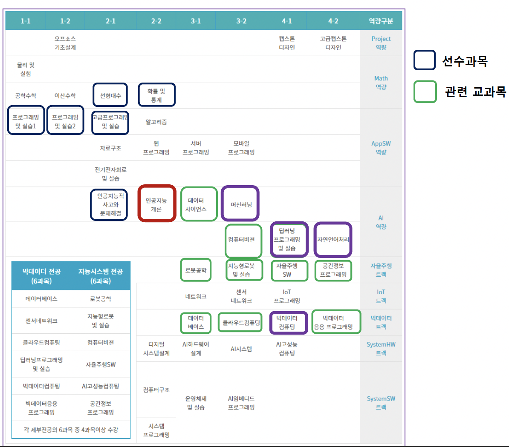

20221115
AI융합학부 교과과정 (21학번)

기계학습 (machine learning)
경험 (training data)을 통해서 나중에 유사하거나 같은 일 (task)를 더 효율적으로 처리할 수 있도록 시스템의 구조나 parameter를 바꾸는 것
컴퓨터가 데이터로부터 특정 문제해결을 위한 지식을 자동으로 추출해서 사용할 수 있게 하는 기술
| 경험 | 일 | 효율(성능) |
|---|---|---|
| 필기문자 이미지, 글자 | 문자 판독(인식) | 정확도 |
| 사진, 얼굴영역 | 사진에서 얼굴영역 식별 | 정확도 |
| 이메일, 스팸여부 | 스팸 이메일 판단 | 정확도 |
| 풍경 사진 | 유사한 풍경 사진 식별 | 유사도 |
| 바둑 대국 | 바둑두는 방법 | 승률 |


필기문자 인식

직접 만든 규칙이나 휴리스틱 (heuristic)
- 복잡
- 불충분한 성능
기계학습 방법
- 자동으로 분류 규칙이나 프로그램 생성
- 괄목할 만한 성능
연역적 학습 (deductive learning)
연역적 추론 (deductive inference)을 통한 학습
귀납적 학습 (inductive learning)
사례들(examples)을 일반화(generalization)하여 패턴(pattern) 또는 모델 (model)을 추출하는 것
일반적인 기계학습의 대상
학습 데이터를 잘 설명할 수 있는 패턴을 찾는 것
- 오컴의 면도날 (Occam’s razor)
- 가능하면 학습 결과를 간단한 형태로 표현하는 것이 좋다


기계학습의 종류
지도학습 (supervised learning)
- 입력(문제)-출력(답)의 데이터들로부터 새로운 입력에 대한 출력을 결정할 수 있는 패턴 추출
비지도학습 (unsupervised learning, 자율학습)
- 출력에 대한 정보가 없는 데이터로부터 필요한 패턴 추출
반지도학습 (semisupervised learning)
- 일부 학습 데이터만 출력값이 주어진 상태에서 일반화한 패턴 추출
강화학습 (reinforcement learning)
- 출력에 대한 정확한 정보를 제공하지는 않지만, 평가정보 (reward)는 주어지는 문제에 대해 각 상태에서의 행동 (action)을 결정
기계학습 대상 문제
- 분류
- 과적합 학습의 문제
- 학습 데이터가 적은 경우의 성능평가
- 불균형 데이터 문제
- 이진 분류기의 성능 평가
- 회귀
- 군집화
- 밀도추정
- 자원축소
- 이상치 탐지
- 반지도 학습
지도학습 (supervised learning)
주어진 (입력, 출력)에 대한 데이터 이용: 학습 (training) 데이터
\[ \{(x_1, y_1), (x_2, y_2), ..., (x_n, y_n)\} \]
새로운 입력이 있을 때 결과를 결정할 수 있도록 하는 방법 찾아내는 것
\[ y = f(x) \]
분류 (classification)
출력이 정해진 분류 (class, category) 중의 하나로 결정
데이터들을 정해진 몇 개의 부류(class)로 대응시키는 문제

분류 문제의 학습
학습 데이터를 잘 분류할 수 있는 함수를 찾는 것
함수의 형태는 수학적 함수일 수도 있고, 규칙일 수도 있음
분류기 (classifier)
학습된 함수를 이용하여 데이터를 분류하는 프로그램
분류기 학습 알고리즘
결정트리(decision tree) 알고리즘
K-근접이웃 (K-nearest neighbor, KNN) 알고리즘
다층 퍼셉트론 신경망
딥러닝 (deep learning) 알고리즘
서포트 벡터 머신 (support vector machine, SVM)
에이다부스트 (Adaboost)
랜덤 포리스트 (random forest)
확률 그래프 모델 (probabilistic graphical model)
이상적인 분류기
학습에 사용되지 않은 데이터에 대해서 분류를 잘 하는 것
일반화 (generalization) 능력이 좋은 것
데이터의 구분
학습 데이터 (training data)
- 분류기 (classifier)를 학습하는데 사용하는 데이터 집합
- 학습 데이터가 많을 수록 유리
테스트 데이터 (test data)
- 학습된 모델의 성능을 평가하는데 사용하는 데이터 집합
- 학습에 사용되지 않은 데이터이어야 함
검증 데이터 (validation data)
- 학습과정에서 학습을 중단할 시점을 결정하기 위해 사용하는 데이터 집합
과적합 (overfitting)
학습 데이터에 대해서 지나치게 잘 학습된 상태
데이터는 오류나 잡음을 포함할 개연성이 크기 때문에, 학습 데이터에 대해 매우 높은 성능을 보이더라도 학습되지 않은 데이터에 대해 좋지 않은 성능을 보일 수 있음
부적합 (underfitting)
학습 데이터를 춘분히 학습하지 않은 상태


현대적인 overfitting problem의 해결방법
- structural capacity의 learning model 선택 → 최적화 기법을 사용한 learning model의 numerical capacity를 낮춤
과적합 회피 방법
- 학습데이터에 대한 성능
- 학습을 진행할 수록 오류 개선 경향
- 지나치게 학습이 진행되면 과적합 발생
- 학습과정에서 별도의 검증 데이터 (validation data)에 대한 성능 평가
- 검증 데이터에 대한 오류가 감소하다가 증가하는 시점에 학습 중단

분류기의 성능평가
정확도 (accuracy)
- 얼마나 정확하게 분류하는가
- 정확도 = (옳게 분류한 데이터 개수) / (전체 데이터 개수)
- 테스트 데이터에 대한 정확도를 분류기의 정확도로 사용
정확도가 높은 분류기를 학습하기 위해서는 많은 학습 데이터를 사용하는 것이 유리
학습 데이터와 테스트 데이터는 겹치지 않도록 해야 함
데이터가 부족한 경우 성능평가
- 별도로 테스트 데이터를 확보하면 비효율적
- 가능하면 많은 데이터를 학습에 사용하면서, 성능 평가하는 방법 필요
K-겹 교차검증 (k-fold cross-validation)
- 전체 데이터를 k 등분
- 각 등분을 한 번씩 테스트 데이터로 사용하여, 성능 평가를 하고 평균값 선택

회귀분석 (regression)
출력이 연속인 영역 (continuous domain)의 값 결정